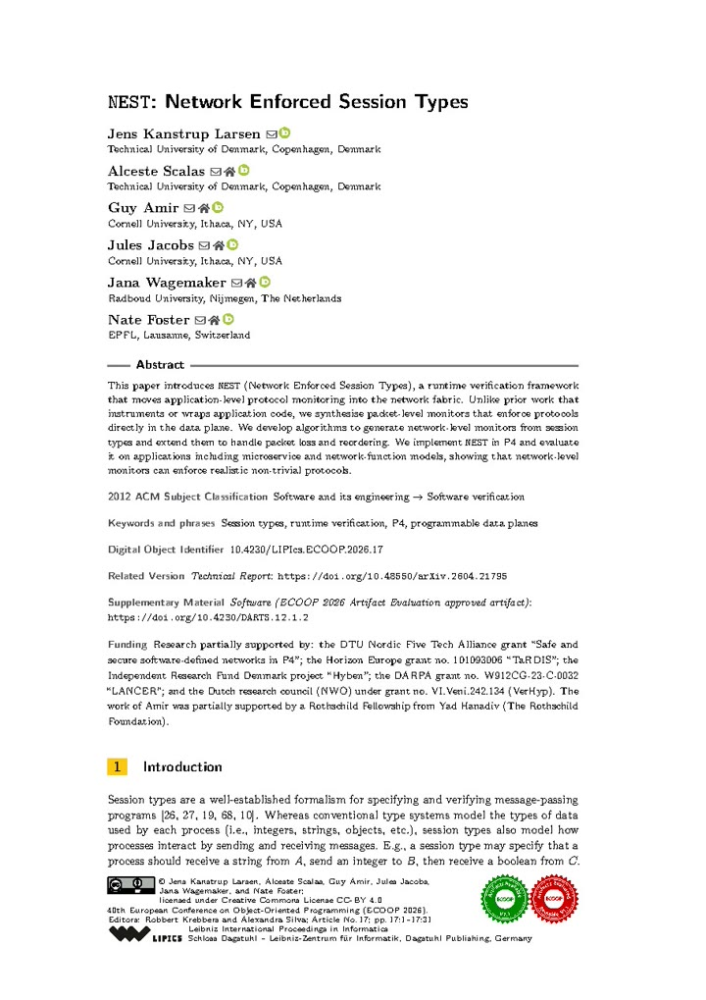

Runtime monitoring of protocols usually instruments or wraps application code. NEST moves it into the network instead: it generates packet-level monitors from session types, handling packet loss and reordering, and runs them in the data plane. Implemented in P4 and evaluated on microservice and network-function models, the monitors enforce realistic non-trivial protocols.

Read the paperThis paper introduces NEST (Network Enforced Session Types), a runtime verification framework that moves application-level protocol monitoring into the network fabric. Unlike prior work that instruments or wraps application code, we synthesise packet-level monitors that enforce protocols directly in the data plane. We develop algorithms to generate network-level monitors from session types and extend them to handle packet loss and reordering. We implement NEST in P4 and evaluate it on applications including microservice and network-function models, showing that network-level monitors can enforce realistic non-trivial protocols.
@inproceedings{larsen2026nest,
doi = {10.4230/LIPICS.ECOOP.2026.17},
url = {https://drops.dagstuhl.de/entities/document/10.4230/LIPIcs.ECOOP.2026.17},
author = {Larsen, Jens Kanstrup and Scalas, Alceste and Amir, Guy and Jacobs, Jules and Wagemaker, Jana and Foster, Nate},
keywords = {Session types, runtime verification, P4, programmable data planes, Software and its engineering → Software verification},
language = {en},
title = {NEST: Network Enforced Session Types},
journal = {LIPIcs, Volume 372, ECOOP 2026},
volume = {372},
pages = {17:1-17:31},
publisher = {Schloss Dagstuhl – Leibniz-Zentrum für Informatik},
year = {2026},
copyright = {Creative Commons Attribution 4.0 International license}
}